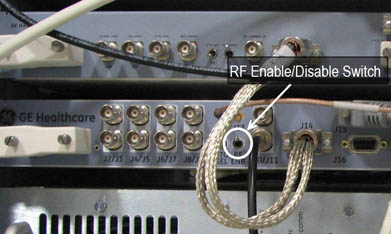
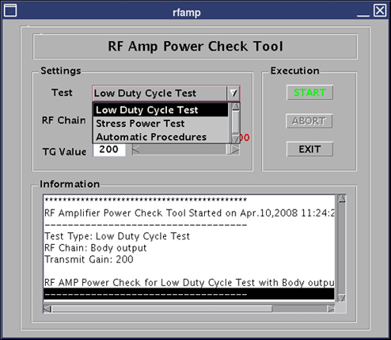
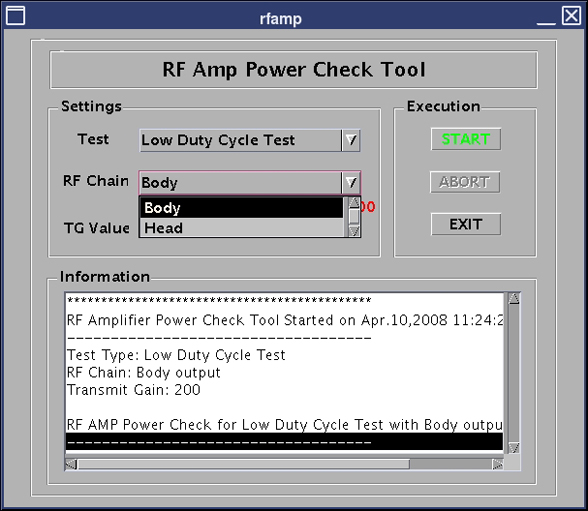

Operating Documentation
Direction 5500113, Rev# 3
Module Version 8.0, Version Date 8/27/10
Operating Documentation |
| ||||
| Currently, this procedure applies only to 3.0T systems. It is not compatible with 1.5T MR450 systems. This test requires appropriate sphere and loader assembly landmarked at the proper location on cradle. | ||||
Set up the appropriate phantom.
If selecting the Body RF Chain, set up the 3.0T Body Sphere and Loader Phantom assembly in the center of patient cradle, and landmark the phantom.
If selecting the Head RF Chain, set up the 3.0T Head Sphere and Loader Phantom assembly on the head load positioner inside the head coil, and landmark the phantom.
If a problem is suspected in the transmit chain resulting in a poor RF load that is causing RF Amp faults, substituting the fan-cooled 3.0T dummy load from the 3.0T RF Power Measurement in place of the normal body or head transmit loads may confirm this. Otherwise, proceed to Launching RF Amp Power Check Tool.
Obtain a DVM reading and configure to measure resistance.
Measure the resistance between the center pin and the shield of the RF Connector on the 3.0T fan-cooled dummy load from the 3.0T RF Power Measurement Kit, and confirm it measures 50 ohms, ±5 ohms.
Disable RF input to the amplifier by placing the RF ENB Switch on the DTX1 Exciter module, located in the Penetration Cabinet, in the Disabled (down) position as shown below.
Illustration 1: RF Enable/Disable Switch

Connect the 3.0T fan-cooled dummy load to the body or head ports on the RF Amplifier as shown below.
Illustration 2: Dummy Load Connection - Body

Illustration 3: Dummy Load Connection - Head

| NOTE: | Connect the N to 7/16 in. adapter between J3 and the dummy load cable as shown above. |
Disable TR Driver Module fault monitoring (shown below).
Illustration 4: Driver Module Front Switches

Enable RF input to the amplifier by placing the RF ENB Switch in the Enabled (up) position.
From the Common Service Desktop, click the Utilities tab.
Select RF Amp Power Check Tool from the left side of the screen to launch the tool.
Select the desired test to run (default recommended) as shown below.
Illustration 5: Select Test to Run

Select Body or Head as shown below.
Illustration 6: Select the RF Chain

If desired, set TG level manually (default recommended).
Close the Magnet Room door.
Click [START] to begin the test.
To verify that the coil and phantom selected was properly set up and landmarked, the window shown below will display. Click [Yes] to continue with the test.
Illustration 7: Verify Coil Setup
In a C-shell or terminal window, type: cd /usr/g/service/cclass/rfamp_power_check/ and press <Enter>.
On the second line, type: ls *.results -ltr and press <Enter>.
On the third line, type: more rfamp_10_4_2008.results, using the date the test was run, then press <Enter> as shown below.
All zeros reported for the selected Head or Body port (VSWR will never be zero) means either the port was not selected from the RF Chain pull-down, or the RF Amplifier never completed the test and collected the data. Check the test setup and landmarking, and check for any RF Amplifier faults in the GE System log.
Click [EXIT] to quit the tool.
Remove all coils and phantoms from the patient table.
Remove dummy load if connected.
Disable RF input to amplifier by placing the RF ENB Switch in Disable (down) position.
Remove load and reattach transmit line to RF amplifier.
Enable TR and DD fault monitoring at driver module. (See Illustration 4.)
Place RF ENB Switch in Enable (up) position.
Perform Head or Body scan to confirm system functionality.